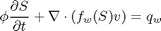
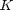
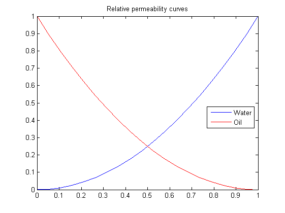
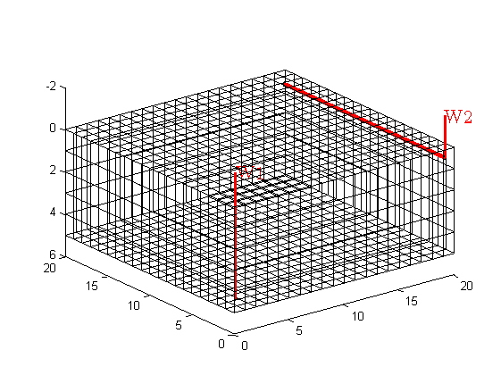

Basic Transport-Solver Tutorial
Consider a two-phase oil-water problem. Solve the two-phase pressure equation

where v is the Darcy velocity (total velocity) and lambda is the mobility, which depends on the water saturation S.
The saturation equation (conservation of the water phase) is given as:

where phi is the rock porosity, f is the Buckley-Leverett fractional flow function, and q_w is the water source term.
This is a continuation of the basic flow-solver tutorial, in which we solved the corresponding single-phase problem using the mimetic pressure solver. Here, we demonstrate how this flow solver can be extended by an explicit or an implicit two-phase transport solver. The grid is Cartesian with isotropic, homogeneous permeability. See the basic flow-solver tutorial for more details on the grid structure, the structure used to hold the solutions, etc.
Contents
Define geometry and rock parameters
Construct a Cartesian grid of size 20-by-20-by-5 cells, where each cell has dimension 1-by-1-by-1. Set the permeability  to be homogeneous, isotropic and equal 100 mD and the porosity to be equal to 0.3.
nx = 20; ny = 20; nz = 5; G = cartGrid([nx, ny, nz]); G = computeGeometry(G); rock.perm = repmat(100*milli*darcy, [G.cells.num, 1]); rock.poro = repmat(0.3, [G.cells.num, 1]);
Define the two-phase fluid model
The two-phase fluid model has default values:
- densities: [rho_w, rho_o] = [1000 700] kg/m^3
- viscosities: [mu_w, mu_o] = [1 10] cP.
fluid = initSimpleFluid();
The fluid model represented by the fluid structure is the two-phase incompressible counterpart to the fluid model of the Black Oil 'pvt' function. For generality, the argument to all member functions is assumed to be a structure that contains (at least) a saturation field. Therefore, to plot the relative permeability, one needs to do as follows
S.s=linspace(0,1,20)'; kr=fluid.kr(S); %temporary structure plot(S.s,kr(:,1), 'b', S.s,kr(:,2), 'r'); title('Relative permeability curves') legend('Water','Oil','Location','Best')
Initialize and construct linear system
Initialize solution structure with reservoir pressure equal 0 and initial water saturation equal 0.0 (reservoir is filled with oil). Compute the mimetic inner product from input grid and rock properties.
rSol = initResSol(G, 0.0, 0.0);
S = computeMimeticIP(G, rock, 'Verbose', true);
Using inner product: 'ip_simple'. Computing component matrices C and D ... Elapsed time is 0.001030 seconds. Computing cell inner products ... Elapsed time is 0.205651 seconds. Assembling global inner product matrix ... Elapsed time is 0.002808 seconds.
Introduce wells
We will include two wells, one rate-controlled vertical well and one horizontal well controlled by bottom-hole pressure. Wells are described using a Peacemann model, giving an extra set of equations that need to be assembled, see "Using Peacemann well models" for more details.
W = addWell(G, rock, [], 1 : nx*ny : nx*ny*nz, ... 'Type', 'rate', 'Val', 1.0/day(), ... 'Radius', 0.1, 'Comp_i',[ 1, 0, 0]); W = addWell(G, rock, W, nx : ny : nx*ny, ... 'Type', 'bhp' , 'Val', 1.0e5, ... 'Radius', 0.1, 'Dir', 'y'); % To check if the wells are placed as we wanted them, we plot them clf plotGrid(G, 'FaceColor', 'none'); view(3); [ht, htxt, hs] = plotWell(G, W, 'radius', 0.1, 'height', 2); set(htxt, 'FontSize', 16);
Once the wells are added, we can generate the components of the linear system corresponding to the two wells and initialize the solution structure (with correct bhp)
wSol = initWellSol(W, 1.0*barsa());
Solve initial pressure in reservoir
Solve linear system construced from S and W to obtain solution for flow and pressure in the reservoir and the wells.
gravity off [rSol, wSol] = solveIncompFlow(rSol, wSol, G, S, fluid, 'wells', W);
Report initial state of reservoir
subplot(2,1,1), cla plotCellData(G, convertTo(rSol.cellPressure, barsa)); title('Initial pressure'), view(3) subplot(2,1,2), cla cellNo = rldecode(1:G.cells.num, double(G.cells.numFaces), 2) .'; plotCellData(G, accumarray(cellNo, ... abs(convertTo(rSol.cellFlux, meter^3/day)))); title('Initial flux intensity'), view(3)

Transport loop
We solve the two-phase system using a sequential splitting in which the pressure and fluxes are computed by solving the flow equation and then held fixed as the saturation is advanced according to the transport equation. This procedure is repeated for a given number of time steps (here we use 15 equally spaced time steps). The error introduced by this splitting of flow and transport can be reduced by iterating each time step until e.g., the residual is below a certain user-prescribed threshold (this is not done herein).
T = 300*day();
dT = T/15;
dTplot = 100*day(); % plot only every 100th day
N = fix(T/dTplot);
pv = poreVolume(G,rock);
The transport equation will be solved by the single-point upstream method with either explicit or implicit time discretizations. Both schemes may use internal time steps to obtain a stable discretization. To represent the two solutions, we create new solution objects to be used by the solver with implicit transport step.
rISol = rSol; wISol = wSol;
Start the main loop
t = 0; plotNo = 1; hi = 'Implicit: '; he = 'Explicit: '; e = []; pi = []; pe = []; while t < T, rSol = explicitTransport(rSol, wSol, G, dT, rock, fluid, 'wells', W); rISol = implicitTransport(rISol, wISol, G, dT, rock, fluid, 'wells', W); % Check for inconsistent saturations assert(max([rSol.s; rISol.s]) < 1+eps && min([rSol.s; rISol.s]) > -eps); % Update solution of pressure equation. [rSol, wSol] = solveIncompFlow(rSol, wSol, G, S, fluid, 'wells', W); [rISol, wISol] = solveIncompFlow(rISol, wISol, G, S, fluid, 'wells', W); % Measure water saturation in production cells in saturation e = [e; sum(abs(rSol.s - rISol.s).*pv)/sum(pv)]; %#ok pe = [pe; rSol.s(W(2).cells)' ]; %#ok pi = [pi; rISol.s(W(2).cells)']; %#ok % Increase time and continue if we do not want to plot saturations t = t + dT; if ( t < plotNo*dTplot && t <T), continue, end % Plot saturation heading = [num2str(convertTo(t,day)), ' days']; r = 0.01; subplot('position',[(plotNo-1)/N+r, 0.50, 1/N-2*r, 0.48]), cla plotCellData(G, rSol.s); view(60,50), axis equal off, title([he heading]) subplot('position',[(plotNo-1)/N+r, 0.02, 1/N-2*r, 0.48]), cla plotCellData(G, rISol.s); view(60,50), axis equal off, title([hi heading]) plotNo = plotNo+1; end

As we clearly can see from the plots in the figure, the implicit scheme has much more numerical diffusion than the explicit scheme early in the simulation, but as the time increase, the difference is smaller. To verify this, we can plot the error or the breakthrough curves
n = size(pe,1); subplot(1,2,1), plot(1:n,e*100,'-o'), title('Percentage saturation discrepancy') subplot(1,2,2), plot(1:n,pe(:,1),'-o',1:n,pi(:,1),'--*') legend('Explicit','Implicit','Location','Best'); title('Water breakthrough at heel');

#COPYRIGHT_EXAMPLE#
Last time modified: $Id: simple2phWellExample.m 2071 2009-04-21 17:23:25Z bska $